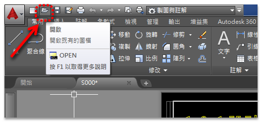
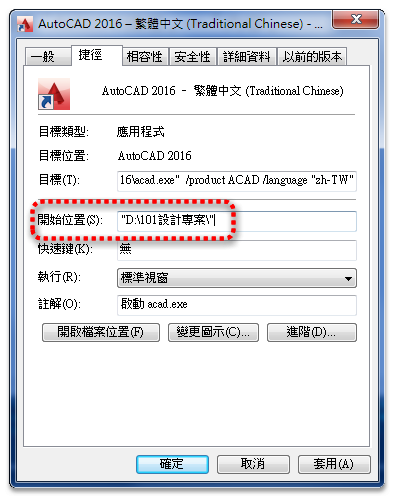
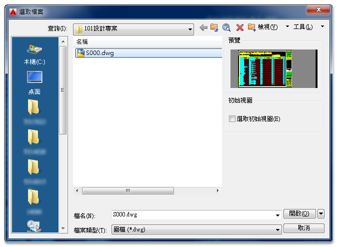
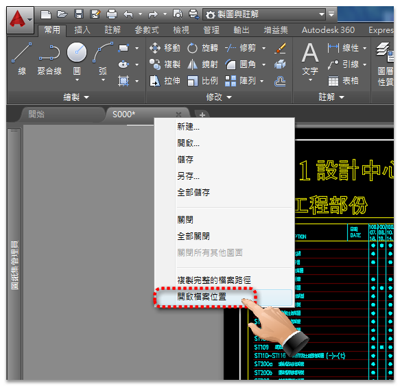
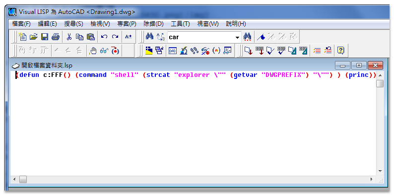

大家好：
作圖過程常常會開啟dwg圖檔修改圖面，這是日常工作中不可缺少的一個環節～
但有沒有想過如何節省這個步驟過程，有沒有更方便快速的的替代方式呢？
以下整理幾個方式，分為初階到高階應用，各位看倌選擇適合自己的方式吧！
關於dwg圖檔資料夾位置，一般傳統方式均透過「開啟OPEN指令」

然後找尋電腦中「圖檔資料夾」路徑，竟而找到要開啟的DWG圖檔

註：可以將「圖檔資料夾」按住拖曳到左方建立捷徑列，方便日後使用。+


可以透過「AutoCAD捷徑」→「內容」

設定圖檔資料夾位置「開始位置」

當使用者透過「開啟OPEN指令」，就會依照剛剛設置的「開始位置」


註：僅支援AutoCAD 2014以上版本
畫面顯示dwg圖檔存放的資料夾位置
▼方式四：巨集指令（內涵LISP語法）→「開啟檔案資料夾」
代碼:
^C^C(command "shell" (strcat "explorer " (getvar "dwgprefix") " "));

代碼:
(defun c:FFF() (command "shell" (strcat "explorer \"" (getvar "DWGPREFIX") "\"") ) (princ))

註：FFF指令可以自行修改指令名。
影片網址： https://youtu.be/IZjyiz6HISo
補充：如果電腦有二種以上AutoCAD版本，關於啟動哪一個AutoCAD版本，可以使用以下方式設置
1.選擇dwg檔案 >> 按滑鼠右鍵 >> 內容
2.選擇 變更 >> AutoCAD DWG Launcher >> 確定
以後電腦就會以最後啟動的 AutoCAD版本開啟dwg檔案